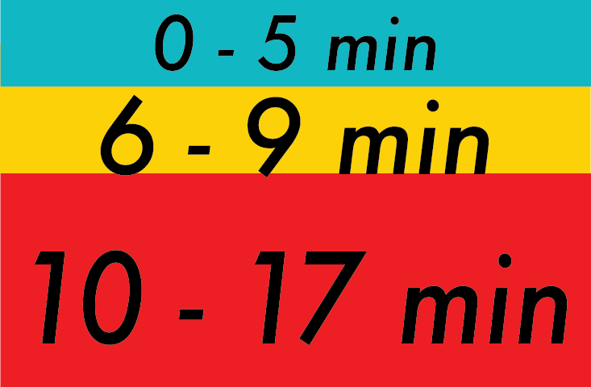

Table 1. Toilet retention data collected by experimenter Ellen Lo from 10/12 to 10/20. Colored blocks, according to this legend , represent amount of time experimenter sat on the toilet at a given time (y-axis) on a given day (x-axis).